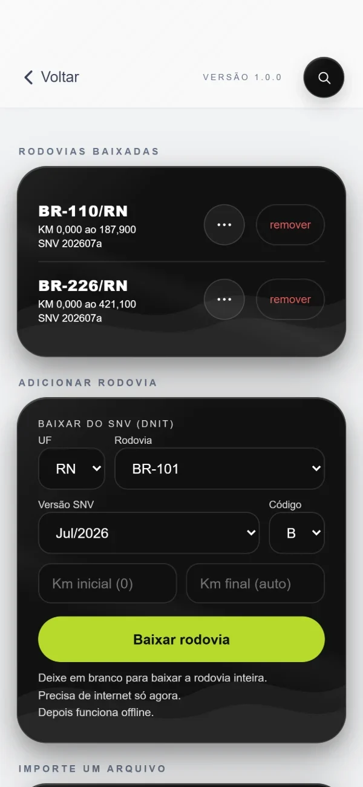
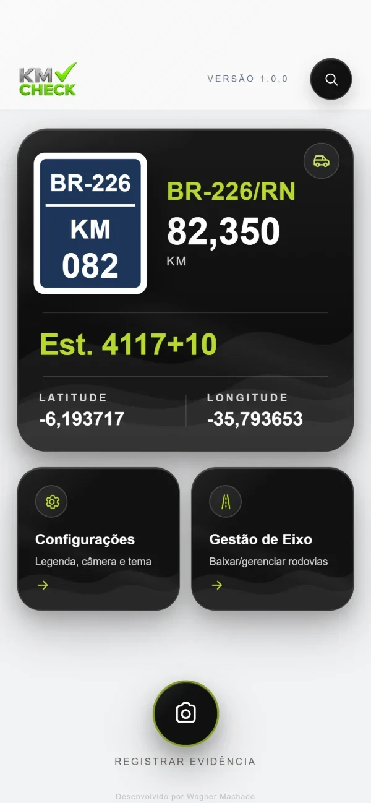
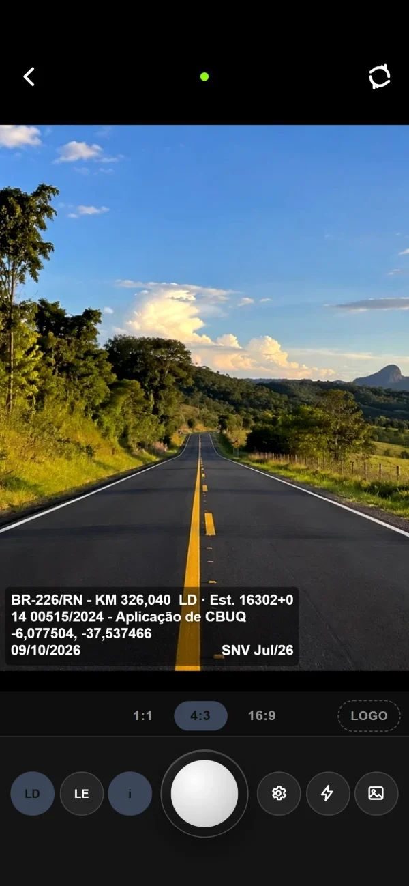
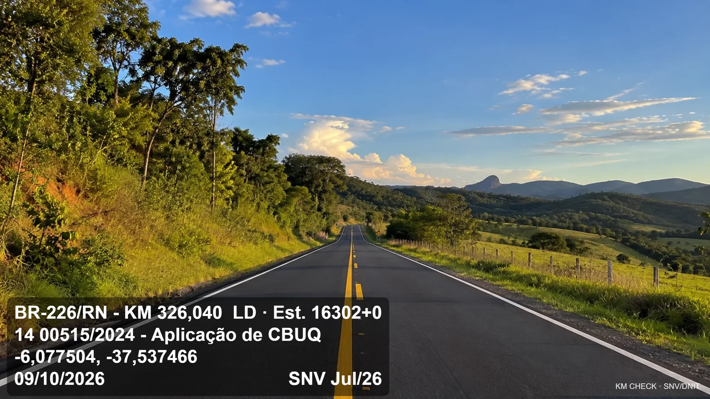
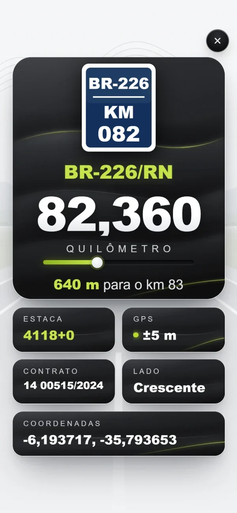
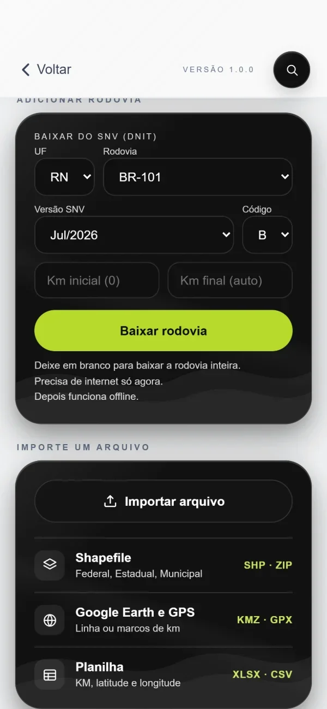

01
Baixe a rodovia
Escolha UF e BR do SNV/DNIT, ou importe KMZ, Shapefile e planilha. Precisa de internet só nesse momento.

Registro fotográfico de rodovias com KM, estaca e coordenadas gravados na própria foto. Direto do campo, sem depender de internet.
Versão 1.0.0Você baixa a rodovia uma vez. Depois o GPS faz o resto, até sem sinal.
Escolha UF e BR do SNV/DNIT, ou importe KMZ, Shapefile e planilha. Precisa de internet só nesse momento.

A tela inicial mostra rodovia, KM e estaca do ponto onde você está, pelo GPS, acompanhando o carro.

Toque em Registrar evidência. A legenda sai gravada dentro da imagem, com rodovia, KM, coordenadas e data.

Nada de planilha para cruzar depois. Cada imagem já sai identificada, e ninguém consegue separar a legenda da foto.

Legenda gravadaPainel grande, que escurece à noite. Distância até o próximo km e GPS em tempo real.

Baixe do SNV ou importe KMZ, Shapefile, Google Earth e planilha com seu traçado.

As rodovias ficam salvas no aparelho. O KM sai pelo GPS em qualquer estrada, mesmo sem sinal.